Introduction to ScrollMagic
Welcome to a beginner's guide to ScrollMagic! This JavaScript library offers a simple, but robust way
to add effects to your HTML page elements based on user scroll position.
The library in its current version works with plain old JavaScript, HTML, and CSS. However, the library
can also be utilized through plugins available for jQuery, GSAP, and VelocityJS. For developers, this
allows for customization and component extension.
Some of the features provided for by the framework plugins include animation triggering, element pinning,
easy parallax effects, infinitely scrolling pages, and callback pinning.
ScrollMagic works on object oriented principles just like normal JavaScript. It was designed to be lightweight,
flexible, mobile compatible, and screen responsive among other things.
Because of the tremendous depth of functionality provided by ScrollMagic, this tutorial will focus on the key concepts
in a few simple examples and provide alternate
resources for further learning.
How To Get Started
The first thing that must be done to start using ScrollMagic is to include the library in your code.
There are several ways to accomplish this as listed and described below.
The recommended way is to use the Content Delivery Network as it does not require you to perform a
full download of the library. Also, it is possible that browser caching
occurs for users which speeds up page load.
Plugins required for specific frameworks/libraries will be provided and discussed in their respective sections.
- Content Delivery Network - https://cdnjs.cloudflare.com/ajax/libs/ScrollMagic/2.0.5/ScrollMagic.js
To use the CDN, you must include the above code in a script tag with the source set to the link.
Place the finished product in your head section and it should look something like this:
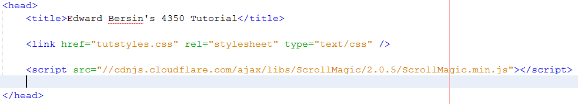 - Github Download - Full Source
To make use of the full library download, you must include it in your project's library folder.
Then you should declare its usage with a script tag in your page like this:
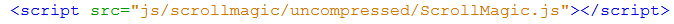 - Node Package Manager - $ npm install scrollmagic
To use NPM, you must already have the program installed on your device.
The official developer site can be found here with instructions on how to download.
After NPM is working, you can enter the above command line call to install the library.
Then you should declare its usage in the same way as above. The following snippet uses the minified version:
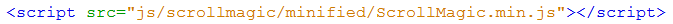
There is one last download that is highly recommended before starting. It is the debugging plugin.
This plugin will allow you to see markings on the scroll bar to know when events should trigger.
It also provides extra functions which enable you to print pertinent debug info to the console.
The CDN is provided for simplicity, but the full library download and include method works as well:
http://cdnjs.cloudflare.com/ajax/libs/ScrollMagic/2.0.5/plugins/debug.addIndicators.js
How Does It Work
The basic idea behind the library is the use of a Controller object and Scene objects. The controller
becomes the manager and activator of effects to given scenes.
The scenes determine and describe to the controller what effects to apply and when. Each scene can
reference an HTML element through CSS selectors or
remain blank to trigger at the top of the page.
Enter the body section of your HTML page and create a script tag at the bottom. With the script towards
the end, the rest of the HTML is given a chance to load
before running animation.
In the JavaScript, create a variable to represent the controller and then create a new ScrollMagic
Controller object:
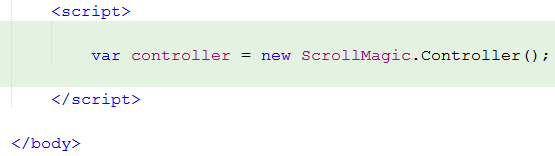
It is possible to set properties for all scenes by modifying the controller object on instantiation.
However, like with CSS, properties redefined
later by scenes will overwrite anything set here:
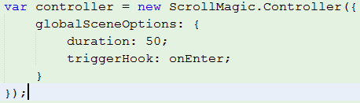
The controller is now created and will be linked to the browser scrollbar. Now, we can begin creating
scenes for the newly created controller.
For this task, we will create another variable to represent the scene and then we will create a new
ScrollMagic Scene object:
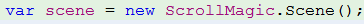
At this point, we can style the scene variable with a variety of properties. These properties will be
placed into the Scene constructor as a JavaScript object.
The syntax of the object is similar to what you would see in a CSS element.
In the following example,
several of the most important properties are applied and described:
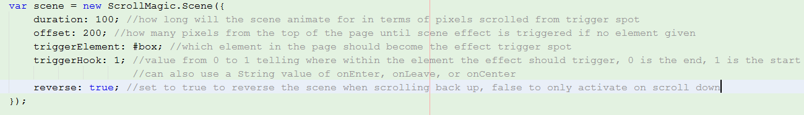
Finally, the scene can be given to the controller and connected. There are several ways to add the scene
to the controller for management. They are detailed as follows:
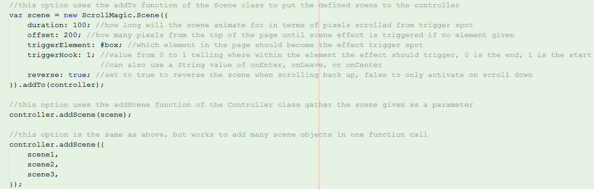
Before leaving the basics, it would be helpful to point out indicators. If you are using the debugging plugin,
you can add marks to the scroll bar to indicate when an event should trigger.
This can be a very helpful tool when it comes to resolving issues in your code. The addition of these ticks,
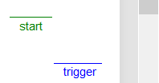
is performed by tacking on the following function during scene creation:
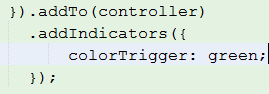
CSS Class Toggling
Class toggling with ScrollMagic is a way to change the appearance of your HTML elements using just CSS
and JavaScript. In simple terms, you will define several styles
for a particular item.
Then, by using nested classes inside of your CSS element description, you can switch between
several looks for a given element.
This functionality is similar to the effects provided for by other libraries including jQuery.
The difference is that instead of calling pre-defined functions, you will write your whole, specific
style for each item to toggle. This allows a larger range of control over the look and feel of your effects
while maintaining a higher degree of simplicity.
To start on this method, we will first create two sections to mess with and adjust:
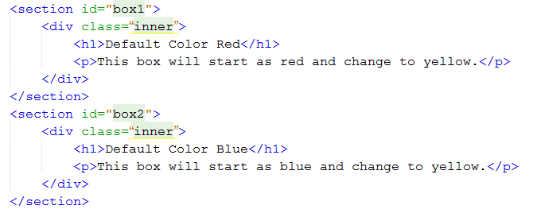
Next we will need a style area to control the look of the two boxes:
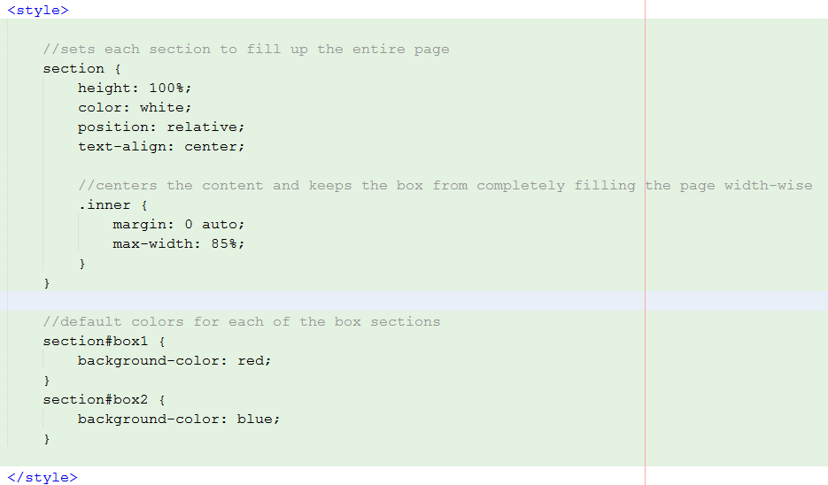
At this point, the first box will appear red and the second box will appear blue. To implement the toggle,
we must now put in a style to switch over to:
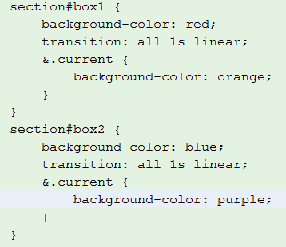
Now, we create the scene objects, call the setClassToggle method, and add the scenes to the controller.
Any properties set in the scene will determine when the toggle triggers.
This example will cause the boxes to change their color to orange/purple when the scrollbar reaches the halfway point
of the specified element:
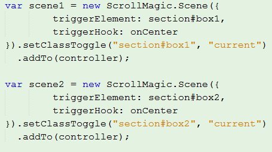
The setClassToggle method uses the given parameters to determine where to look for the class to switch on.
The style defined in the CSS determines how the transition will occur.
A simple example can be located here
jQuery
jQuery is a very popular JavaScript library which supports a multitude of HTML manipulating functions.
With methods designed for animation and event handling,
jQuery uses similar concepts as ScrollMagic.
However, the connection to the scrollbar and event triggering is done entirely through the Controller
abstraction whereas in jQuery much more explicit code is
required to achieve the same effect.
With all that said, ScrollMagic supports the usage of jQuery and can incorporate several helpful
functions into its code.
To get started, use this CDN to add the jQuery library to your project:
https://ajax.googleapis.com/ajax/libs/jquery/1.11.0/jquery.min.js
Minor changes can now be made to the code, for instance, compare this chunk of code, to the original
declaration of the controller:
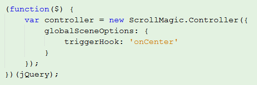
Both creations of the controller complete the same task, but the jQuery one uses a function to work
with the given HTML element.
A useful function that comes from the inclusion of jQuery is the each function. This allows you to
cycle through all the parts of a specific item in your HTML.
The each function used below, demonstrates how many scenes can be created and added to a controller
by iterating through the class:
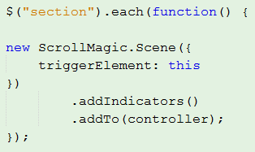
A final important thing to know about using jQuery with ScrollMagic is the ability to create your own functions.
Using the general format here,
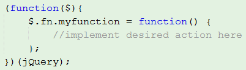
it is possible to extend the abilities of both libraries with scene creation and customization.
GSAP
GreenSock Animation Plugin is one of the plugins that ScrollMagic can utilize to extend its capabilities
and create professional looking animation. Able to touch and move any object created in JavaScript,
GSAP offers an easy to use interface for ScrollMagic to adapt.
To use GSAP, it is also required that you have jQuery in your code. The full source block for GSAP, jQuery,
and ScrollMagic is here:
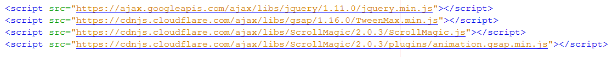
The main usage covered here will be that of Tweens. The Tween class will be used to create variables
that can be animated when passed an HTML element.
For this simple example, we will focus on moving an item to a new location. That purpose is handled
by the following related functions:
- from - animate FROM the entered location to the default value in the style sheet
- to - animate TO the entered location from the default value in the style sheet
- fromTo - animate FROM one entered location TO a second entered location
To keep it simple, we will assume all previous code has been reused up to this point. Now, we
wish to create a variable for the Tween and setup the from function on it. This moves the box
from the given position to whatever is declared in the style sheet:
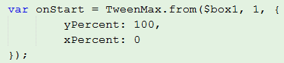
Finally, we use our scene creation to set the tween and add it to the controller:
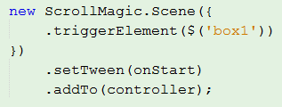
The finished product causes the box1 element to move from the bottom left of the screen to
the spot set in the original style sheet. This event is triggered when the user scrolls far enough
down to enter the element.
An example can be located here
VelocityJS
Velocity.js is an animation engine that is closely related to GSAP. Velocity
does not need jQuery to work, but it can also make use of it if you so wish.
As you could expect, Velocity also requires a CDN to use the plugin:
https://cdnjs.cloudflare.com/ajax/libs/velocity/1.3.1/velocity.min.js
There is a considerable amount of overlap between the setup to use GSAP and to use Velocity.
To avoid redundancy, I will only describe and explain the critical section that varies.
In the following code snippet, the GSAP call to set the Tween is replace by the call to set the
Velocity. The arguments for the call are first the element to be animated and then the list of
animations to be performed:
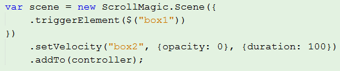
Given all other previous aspects are implemented properly, the use of Velocity above will cause
the second box to disappear when the first box is triggered.
References
- The home page of the ScrollMagic developers and the source for most of the information provided can be found here.
- An extremely detailed and extensive tutorial for ScrollMagic, which I used as a reference, can be found here.
- Finally, a web page designed with ScrollMagic to create an awesome Rube Goldberg Machine can be located here.